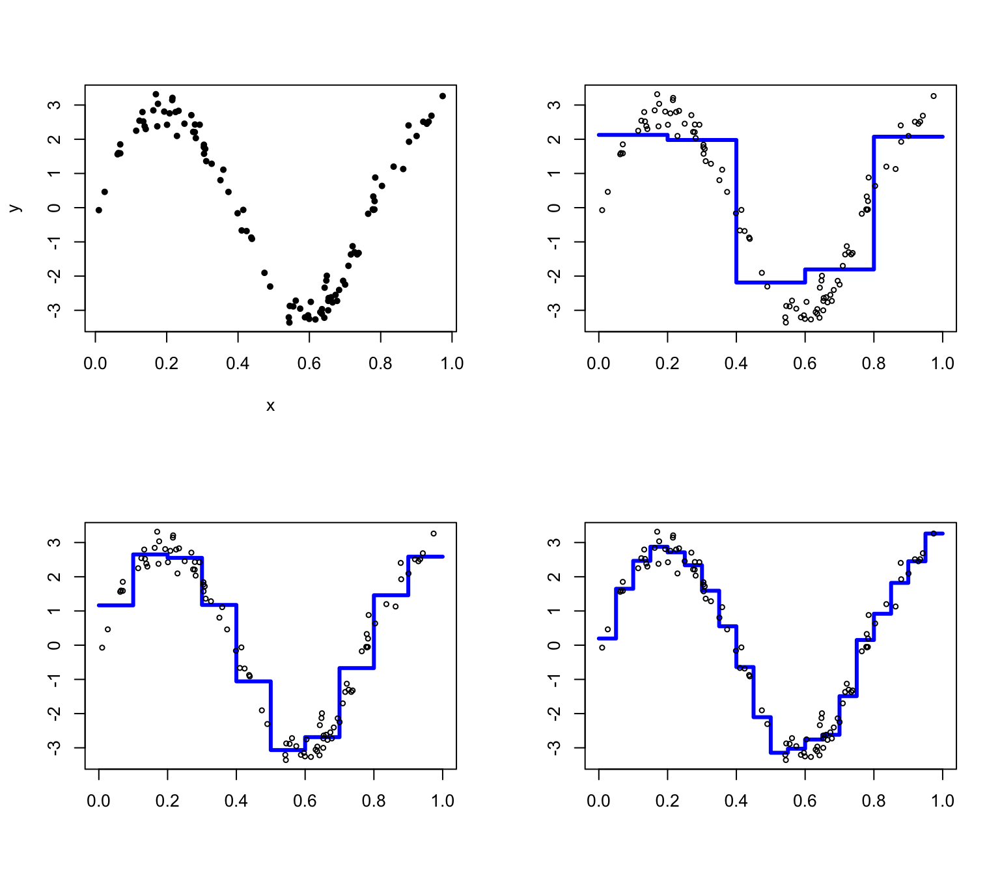
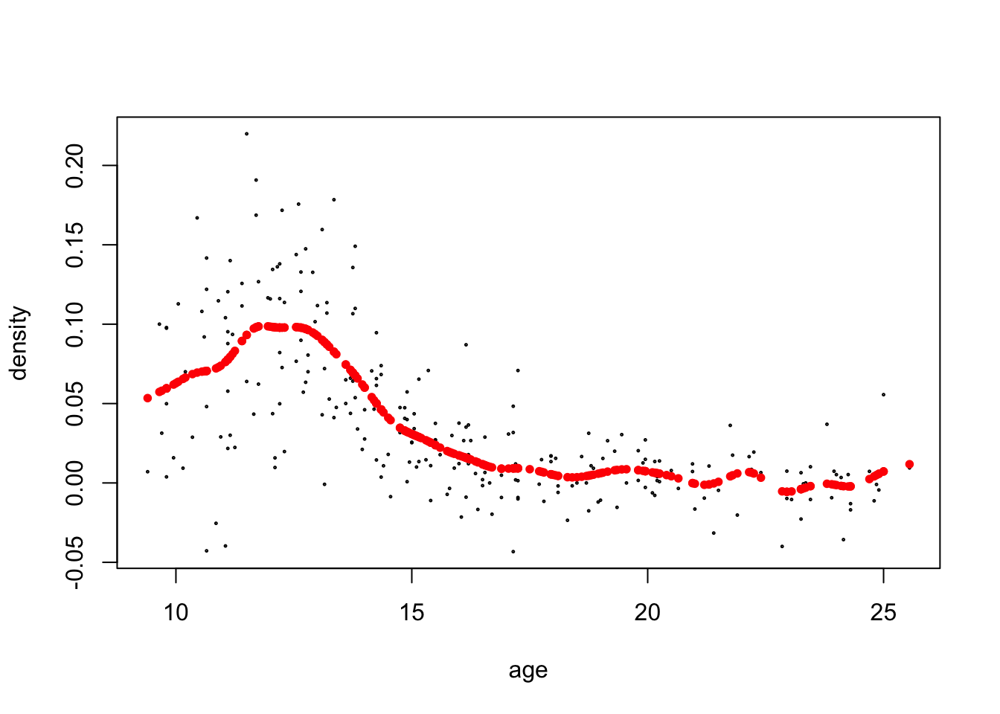

library(kableExtra)
library(tidyr)
library(ElemStatLearn)12 국소 회귀모형
반응변수 \(Y\)와 설명변수 \(X\)가 다음과 같은 관계를 가진다고 하자.
\[ E(Y|X=x) = m(x) \]
이러한 관계를 회귀모형(regression model)이라고 하며 \(Y\)의 평균이 \(X\)에 따라서 변하는 괸계를 설정하는 모형이다.
만약 \(m(x)\)의 형태를 회귀계수의 선형식으로 나타낼 수 있다면 우리는 이를 선형회귀모형(linear regression model)이라고 한다.
\[ m(x) = \beta_1 x_1 + \beta_2 x_2 + \dots + \beta_p x_p \]
설명변수는 고정된 값이거나 또는 확률변수일 수도 있다.
비모수 회귀모형(nonparametric regression model)에서는 \(m(x)\)의 형태에 특별한 제한을 두지 않는다. 따라서 함수 \(m(x)\)는 무수히 많고 다양한 형태를 가질 수 있다.
\(n\)개의 독립표본 \((Y_1,X_1),(Y_2,X_2),\dots,(Y_n,X_n)\)이 주어지면 비모수 회귀모형을 다음과 같이 기술할 수 있다.
\[ Y_i = m(X_i) + e_i \]
여기서 \(X_i\)와 독립인 오차항 \(e_i\)는 서로 독립이고 평균이 0이며 분산이 \(\tau^2\)인 확률변수로 가정한다. 따라서 설명변수의 값이 \(x\)라면 아래와 같이 나타낼 수 있다.
\[ E(Y_i|X_i =x) = E[ m(X_i) + e_i | X_i =x] = m(x) \]
이제 이러한 회귀모형에서 \(m(x)\) 의 형태를 추정하는 것을 생각해보자. \(m(x)\)의 형태를 추정하는 방법은 여러가지가 있을 수 있으며 여기서는 국소회귀모형(local regression model)을 이용하여 \(m(x)\)의 형태를 추정하는 방법을 알아보자.
12.1 Regressogram
Regressogram은 histogrm을 회귀모형에 적용한 방법이다. 아래의 함수 regressogram은 설명변수 벡터 x와 반응변수 벡터 y 를 인자로 받으며 구간 (left, right) 를 k개의 구간으로 나누어 각 구간마다 반응값들의 평균을 구해주는 함수이다. 이렇게 주어진 구간에서 평균값을 이용하여 회귀식을 추정하는 모형을 국소회귀(local regression)이라고 한다.
regressogram = function(x,y,left,right,k,plotit,xlab="",ylab="",sub=""){
### assumes the data are on the interval [left,right]
n = length(x)
B = seq(left,right,length=k+1)
WhichBin = findInterval(x,B)
N = tabulate(WhichBin)
m.hat = rep(0,k)
for(j in 1:k){
if(N[j]>0)m.hat[j] = mean(y[WhichBin == j])
}
if(plotit==TRUE){
a = min(c(y,m.hat))
b = max(c(y,m.hat))
plot(B,c(m.hat,m.hat[k]),lwd=3,type="s",
xlab=xlab,ylab=ylab,ylim=c(a,b),col="blue",sub=sub)
points(x,y,cex=.6)
}
return(list(bins=B,m.hat=m.hat))
}위의 프로그램에서 findInterval(x,B)은 전체 구간 B의 각 구간에 벡터 x 의 값들이 속해있는 정보를 계산해준다. 예를 들어서 \((0,10)\) 구간을 4개로 나누고 \((1,2,2,4,6,7,8)\)의 값이 어떤 구간에 속해있는지 다음과 같이 알 수 있다.
B = seq(0,10,length=5)
B[1] 0.0 2.5 5.0 7.5 10.0x = c(1,2,2,4,6,7,8)
findInterval(x,B)[1] 1 1 1 2 3 3 4이제 다음과 같은 \(m(x)\)를 고려하고 오차항 \(e\)가 정규분포 \(N(0, 3^2)\)을 따른다고 가정하고 임의로 100개의 독립표본을 만든다. \(x\)의 값들은 구간 \((0,1)\)에서 균등분포를 따른다.
\[ m(x) = 3 \sin(8x) \] 이제 구간의 수를 \(k=5,10,20\) 으로 바꾸면서 regressogram이 어떤 형태로 \(m(x)\)를 추정하는지 알아보자.
par(mfrow=c(2,2))
n = 100
x = runif(n)
y = 3*sin(8*x) + rnorm(n,0,.3)
plot(x,y,pch=20)
out = regressogram(x,y,left=0,right=1,k=5,plotit=TRUE)
out = regressogram(x,y,left=0,right=1,k=10,plotit=TRUE)
out = regressogram(x,y,left=0,right=1,k=20,plotit=TRUE)
이제 라이브러리 ElemStatLearn에 있는 실제 자료 bone를 이용하여 regressogram 을 그려보자. 자료 bone의 반응변수는 density (Measurements in the bone mineral density) 이며 설명변수는 나이(age)이다. 남자와 여자를 따로 그렸으며 구간의 크기는 각각 \(k=10\)과 \(k=20\)을 사용해 보았다.
par(mfrow=c(2,2))
#install.packages("ElemStatLearn")
attach(bone)
age.male = age[gender == "male"]
density.male = spnbmd[gender == "male"]
out = regressogram(age.male,density.male,left=9,right=26,k=10,plotit=TRUE,
xlab="Age",ylab="Density",sub="Male")
out = regressogram(age.male,density.male,left=9,right=26,k=20,plotit=TRUE,
xlab="Age",ylab="Density",sub="Male")
age.female = age[gender == "female"]
density.female = spnbmd[gender == "female"]
out = regressogram(age.female,density.female,left=9,right=26,k=10,plotit=TRUE,xlab="Age",ylab="Density",sub="Female")
out = regressogram(age.female,density.female,left=9,right=26,k=20,plotit=TRUE,xlab="Age",ylab="Density",sub="Female")12.2 커널추정
12.2.1 커널추정법
국소회귀에서 가장 많이 사용되는 방법이 커널추정(kernel estimation) 방법이다.
커널은 다음과 같은 성질을 만족하는 함수 \(K(x)\)이다.
\[ \int K(x) d x=1, \quad \int x K(x) d x=0, \quad 0<\int x^2 K(x) d x<\infty \] 커널추정법은 함수 \(m(x)\) 를 다음과 같은 방법으로 추정한다.
\[ \hat m(x) = \frac{ \sum_{i=1}^n K \left ( \frac{x -X_i}{h} \right ) Y_i } { \sum_{i=1}^n K \left ( \frac{x -X_i}{h} \right ) } \]
여기서 \(h\)는 구간길이(bandwidth)라고 부르며 커널의 폭을 결정하는 양이다. \(h\) 가 커지면 추정치 \(\hat m(x)\)는 부드러워지고 \(h\)가 작아지면 추정치 \(\hat m(x)\)는 뾰족해진다.
주로 사용하는 커널함수는 정규분포 커널과
\[ K(x)=\frac{1}{\sqrt{2 \pi}} \exp \left(-x^2 / 2\right), \] 에페네크니코프 커널(Epanechnikov kernel)이 있다.
\[ K(x)= \begin{cases}3 / 4\left(1-x^2\right) & \text { if }|x| \leq 1 \\ 0 & \text { else }\end{cases} \]
다음의 함수 kernel(x,y,grid,h)은 표준편차의 크기가 구간길이 \(h\)인 정규분포 확률밀도함수를 커널로 이용하여 주어진 값 \(x\)에서 반응변수 \(y\)들의 가중평균을 구해주는 함수이다.
\[ K \left ( \frac{x -y}{h} \right ) = (2\pi h^2)^{-1/2} \exp \left ( - \frac{(x -y)^2 }{2h^2} \right ) \]
다음의 함수 kernel.fitted(x,y,h)는 주어진 자료벡터 x,y와 구간의 크기 h에 대하여 반응변수의 예측값 \(\hat Y_i =\hat m_h(X_i)\) 을 커널추정으로 구해준다.
kernel.fitted = function(x,y,h){
### fitted values and diaginal of smoothing matrix
n = length(x)
m.hat = rep(0,n)
S = rep(0,n)
for(i in 1:n){
w = dnorm(x[i],x,h)
w = w/sum(w)
m.hat[i] = sum(y*w)
S[i] = w[i]
}
return(list(fitted=m.hat,S=S))
}\[ \hat Y_i = \hat m(X_i) = \frac{ \sum_{j=1}^n K \left ( \frac{X_i -X_j}{h} \right ) Y_j } { \sum_{j=1}^n K \left ( \frac{X_i -X_j}{h} \right ) } = \sum_{j=1}^{n} l_j(X_i) Y_j = \sum_{j=1}^{n} L_{ij} Y_j \] 또한 위의 식에서 \(L_{ij} = l_j(X_i)\)라고 하면 다음과 같은 선형예측식에서 \(n \times n\) 행렬 \(L = \{ L_{ij} \}\)의 대각원소 \(L_{ii}\)도 계산해준다.
\[ \hat Y = L Y \]
다음 그림을 보면 \(h\) 의 크기가 커지면서 추정치 \(\hat m_h(X_i)\)가 부드러워지는 것을 볼 수 있다.
다음은 \(h\) 가 0.1 인경우 커널추정로 추정한 \(\hat m_h(X_i)\) 의 그림이다. \(\hat m_h(X_i)\)는 빨간색 점으로 표시하였다.
haty <- kernel.fitted(age.female,density.female, 0.1)
plot(age.female,density.female, type="n", ylab = "density", xlab="age")
points(age.female,density.female,cex=.2)
points(age.female,haty$fitted, cex=.8, pch=16, col="red")다음은 \(h\) 가 0.2 인경우 커널추정로 추정한 \(\hat m_h(X_i)\) 의 그림이다. \(\hat m_h(X_i)\)는 빨간색 점으로 표시하였다.
haty <- kernel.fitted(age.female,density.female, 0.2)
plot(age.female,density.female, type="n", ylab = "density", xlab="age")
points(age.female,density.female,cex=.2)
points(age.female,haty$fitted, cex=.8, pch=16, col="red")다음은 \(h\) 가 0.4 인경우 커널추정로 추정한 \(\hat m_h(X_i)\) 의 그림이다. \(\hat m_h(X_i)\)는 빨간색 점으로 표시하였다.
haty <- kernel.fitted(age.female,density.female, 0.4)
plot(age.female,density.female, type="n", ylab = "density", xlab="age")
points(age.female,density.female,cex=.2)
points(age.female,haty$fitted, cex=.8, pch=16, col="red")
다음은 \(h\) 가 0.6 인경우 커널추정로 추정한 \(\hat m_h(X_i)\) 의 그림이다. \(\hat m_h(X_i)\)는 빨간색 점으로 표시하였다.
haty <- kernel.fitted(age.female,density.female, 0.6)
plot(age.female,density.female, type="n", ylab = "density", xlab="age")
points(age.female,density.female,cex=.2)
points(age.female,haty$fitted, cex=.8, pch=16, col="red")다음은 \(h\) 가 3.0 인경우 커널추정로 추정한 \(\hat m_h(X_i)\) 의 그림이다. \(\hat m_h(X_i)\)는 빨간색 점으로 표시하였다.
haty <- kernel.fitted(age.female,density.female, 3.0)
plot(age.female,density.female, type="n", ylab = "density", xlab="age")
points(age.female,density.female,cex=.2)
points(age.female,haty$fitted, cex=.8, pch=16, col="red")이제 구간길이 \(h=0.6\)값에 대하여 설명변수 \(X\) 의 구간을 잘게 그리드(grid)로 나누어 각 설명변수의 값에서 커널추정량을 구해보자.
\[ \hat Y(x) = \hat m(x) = \frac{ \sum_{i=1}^n K \left ( \frac{x -X_i}{h} \right ) Y_i } { \sum_{i=1}^n K \left ( \frac{x -X_i}{h} \right ) } \]
다음 함수 kernel 에서 인자 grid는 x축에서 커널을 계산할 떄 사용되는 점들 모아놓은 벡터이다.
kernel = function(x,y,grid,h){
### kernel regression estimator at a grid of values
n = length(x)
k = length(grid)
m.hat = rep(0,k)
for(i in 1:k){
w = dnorm(grid[i],x,h)
m.hat[i] = sum(y*w)/sum(w)
}
return(m.hat)
}grid = seq(min(age.female),max(age.female),length=100)
m.hat = kernel(age.female,density.female,grid,h=0.6)
plot(age.female,density.female,xlab="Age",ylab="Density")
lines(grid,m.hat,lwd=3,col="blue")12.2.2 편이-분산의 관계
만약 \(\hat m(x)\)가 \(m(x)\)의 추정량이라면 예측위험함수(prediction risk, prediction error) \(R(m, \hat m)\)는 다음과 같이 정의되고분해할 수 있다. 아래의 식을 유도할 때 편의상 \(X\)는 확률변수가 아닌 고정된 값이라고 할 것이며 확률변수인 경우에도 유사한 결과를 얻는다.
\[ \begin{aligned} R(m, \hat m) & = E[Y - \hat m(X)) ]^2 \\ &= E[ (Y - m(X) + m(X) -E(\hat m(X)) + E(\hat m(X)) -\hat m(X) ]^2 \\ &= E[ (Y - m(X) ]^2 + E[m(X) -E(\hat m(X)) ]^2 + E[\hat m(X) -E(\hat m(X))]^2 + \text{cross product terms} \end{aligned} \]
위의 식에서 다음과 같은 결과를 이용하면 교차항들(cross-product terms)은 0이 됨을 보일 수 있으며
\[ E [Y - m(X) ] =E(e) = 0, \quad E[\hat m(X) -E(\hat m(X))] =0 \] 또한 다음과 같은 관계를 이용하면
\[ E [Y - m(X) ]^2 =E(e^2) = \tau^2, \quad m(X) -E(\hat m(X)) = bias(\hat m(X)), \quad E[\hat m(X) -E(\hat m(X))]^2 = Var(\hat m(X)) \]
다음과 같이 예측위험함수의 분해가 가능하다.
\[ R(m, \hat m) = E[Y - \hat m(X) ]^2= \tau^2 + [bias(\hat m(X))]^2 + Var(\hat m(X)) \]
위의 식에서 \(X\)가 확률변수이면 먼저 \(X\)가 주어진 조건부 기대값을 생각하고 위와 같이 유도하면 다음과 같이 나타낼 수 있다.
\[ \begin{aligned} R(m, \hat m) & = E[Y - \hat m(X))^2 ]^2 \\ & = E \left \{ E[ (Y - \hat m(X))^2 |X=x ] \right \} \\ & = \tau^2 + \int [bias(\hat m(x))]^2 dP(x) + \int Var(\hat m(x)) dP(x) \end{aligned} \]
12.2.3 최적 구간길이 선택
다음의 함수 CV(x,y,H)는 자료벡터 x,y와 서로 다른 \(h\)의 값들을 모아 놓은 벡터 H를 받아서 다음과 같은 cross-validation의 값 \(CV\), \(GCV\), \(\nu\)를 계산해 주는 함수이다.
\[ \begin{aligned} CV & = \frac{1}{n} \sum_i^n [ Y_i - \hat m_h^{(-i)} (X_i) ] ^2 = \frac{1}{n} \sum_i^n \left ( \frac {Y_i - \hat m_h (X_i) }{1-L_{ii}} \right )^2 \\ GCV & = \frac{1}{ \left ( 1-\frac{\nu}{n} \right )^2 } \frac{1}{n} \sum_i^n ( Y_i - \hat m_h (X_i))^2 \\ \nu &= trace(L) \end{aligned} \]
CV = function(x,y,H){
### H is a vector of bandwidths
n = length(x)
k = length(H)
cv = rep(0,k)
nu = rep(0,k)
gcv = rep(0,k)
for(i in 1:k){
tmp = kernel.fitted(x,y,H[i])
cv[i] = mean(((y - tmp$fitted)/(1-tmp$S))^2)
nu[i] = sum(tmp$S)
gcv[i] = mean((y - tmp$fitted)^2)/(1-nu[i]/n)^2
}
return(list(cv=cv,gcv=gcv,nu=nu))
}이제 위에서 보았던 bone 자료에 대한 회귀식을 커널로 추정하려고 한다. 이때 CV 또는 GCV를 최소화하는 구간의 크기(bandwidth) \(h\)를 찾기위하여 구간 \((0.1,5)\)안에서 20개의 \(h\)값에 대한 CV 또는 GCV 값을 계산한다. 아래는 CV 또는 GCV 값을 최소로 하는 \(h\)값을 찾는 프로그램이다.
par(mfrow=c(1,2))
H = seq(.1,5,length=20)
H [1] 0.1000000 0.3578947 0.6157895 0.8736842 1.1315789 1.3894737 1.6473684
[8] 1.9052632 2.1631579 2.4210526 2.6789474 2.9368421 3.1947368 3.4526316
[15] 3.7105263 3.9684211 4.2263158 4.4842105 4.7421053 5.0000000out = CV(age.female,density.female,H)
plot(H,out$cv,type="l",lwd=3,xlab="Bandwidth",ylab="Cross-validation Score")
lines(H,out$gcv,lty=2,col="red",lwd=3)
plot(out$nu,out$cv,type="l",lwd=3,xlab="Effective Degrees of Freedom",ylab="Cross-validation score")
lines(out$nu,out$gcv,lty=2,col="red",lwd=3)j = which.min(out$cv)
h = H[j]
h[1] 0.6157895위의 그래프에서 왼쪽은 \(h\)값에 대한 CV(검정 점선)과 GCV(빨간 점선)의 값에 대한 그래프이며 CV를 최소로 하는 \(h\)의 값은 \(0.6157895\)이다. 오른쪽 그래프는 유효 자유도 (Effective Degrees of Freedom) \(\nu\)에 대한 CV(검정 점선)과 GCV(빨간 점선)의 그래프이다.
par(mfrow=c(1,1))
grid = seq(min(age.female),max(age.female),length=100)
m.hat = kernel(age.female,density.female,grid,h)
plot(age.female,density.female,xlab="Age",ylab="Density")
lines(grid,m.hat,lwd=3,col="blue")위의 그래프는 선택된 \(h=0.6157895\)을 이용하여 추정한 반응변수 density 의 커널회귀 함수 \(\hat m(x)\) 이다.
12.2.4 붓스트랩 신뢰 구간
다음 프로그램은 붓스트랩(Bootstrap)을 이용하여 주어진 \(x\)값에서 추정량 \(\hat m(x)\)의 표준오차 \(SE(x)\)를 구하는 프로그램이다.
boot = function(x,y,grid,h,B){
### pointwise standard error for kernel regression using the bootstrap
k = length(grid)
n = length(x)
M = matrix(0,k,B)
for(j in 1:B){
I = sample(1:n,size=n,replace=TRUE)
xx = x[I]
yy = y[I]
M[,j] = kernel(xx,yy,grid,h)
}
s = sqrt(apply(M,1,var))
return(s)
}아래는 추정량 \(\hat m(x)\)의 95% 신뢰구간을 구하는 프로그램이다. 붓스트랩의 반복수는 \(B=1000\)이다.
\[ CI(x) = [\hat m(x) - 2 SE(x) , \hat m(x) + 2 SE(x) ] \]
par(mfrow=c(1,1))
h = .7
grid = seq(min(age.female),max(age.female),length=100)
plot(age.female,density.female)
mhat = kernel(age.female,density.female,grid,h)
lines(grid,mhat,lwd=3)
B = 1000
se = boot(age.female,density.female,grid,h,B)
lines(grid,mhat+2*se,lwd=3,lty=2,col="red")
lines(grid,mhat-2*se,lwd=3,lty=2,col="red")